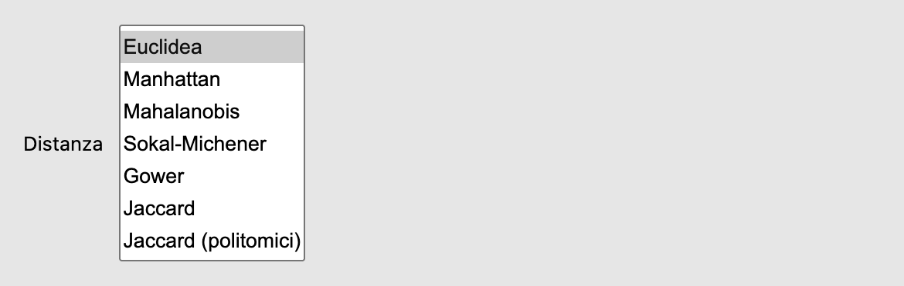
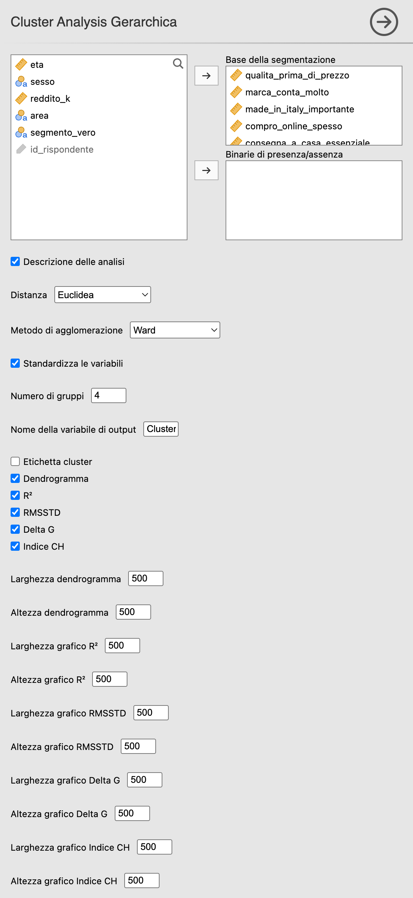

flowchart TD
A[Tipo di dati?] --> B{Numerici}
A --> C{Binari 0/1}
A --> D{Categoriali}
A --> E{Misti}
B --> B1[Standardizzati?]
B1 --> B2[Sì → Euclidea<br/>oppure Manhattan se outlier]
B1 --> B3[Correlati? → Mahalanobis]
C --> C1[Zeri informativi? → Sokal-Michener]
C --> C2[Zeri non informativi? → Jaccard]
D --> D1[Jaccard politomico<br/>oppure Sokal-Michener]
E --> E1[Gower]
25 Distanze e agglomerazione
Menu: Analisi → AnalisiMercato → Cluster Analysis → Cluster Analysis Gerarchica
Questo capitolo entra nel dettaglio delle scelte operative del clustering gerarchico: le 7 distanze e i 5 metodi di agglomerazione implementati, con consigli su quando usare cosa.
25.1 Le 7 distanze
25.1.1 Euclidea
\[ d(x, y) = \sqrt{\sum_{j=1}^{p} (x_j - y_j)^2} \]
- Per: variabili quantitative standardizzate.
- Default consigliato per dati continui.
25.1.2 Manhattan
\[ d(x, y) = \sum_{j=1}^{p} |x_j - y_j| \]
- Per: dati quantitativi con outlier (meno sensibile dell’Euclidea).
- Quando: distanze “a blocchi”, interpretazione lineare.
25.1.3 Mahalanobis
\[ d(x, y) = \sqrt{(x - y)^\top \Sigma^{-1} (x - y)} \]
dove \(\Sigma\) è la matrice di covarianza.
- Per: variabili correlate fra loro.
- Effetto: “decorrela” le variabili prima di misurare la distanza → due dimensioni correlate non vengono contate due volte.
- Nota implementativa:
AnalisiMercatocalcola la Mahalanobis fra coppie di unità, come serve alla cluster analysis, tramite la decomposizione di Cholesky della matrice di covarianza. Da non confondere con la distanza di ciascuna unità dal baricentro, che si usa per individuare i valori anomali.
25.1.4 Sokal-Michener
\[ d(x, y) = \frac{\text{disaccordi}}{\text{numero totale di variabili}} \]
- Per: variabili binarie 0/1 (presenze/assenze) e variabili categoriali a più modalità.
- Estensione politomica: su dati non binari la distanza è la quota di variabili su cui i due individui presentano modalità diverse (Simple Matching). Non c’è nulla da ricodificare a mano: il modulo lo fa e lo dichiara con una nota sotto la tabella dei risultati.
- Quando: gli zeri contano quanto gli uni (es. risposta “no” è informativa quanto “sì”).
25.1.5 Gower
Combina, variabile per variabile:
- per le quantitative, la differenza assoluta normalizzata per il campo di variazione (range) della variabile;
- per le categoriali, il simple matching (0 se stessa modalità, 1 se diversa);
- per le binarie di presenza/assenza della casella apposita, 0 se l’attributo è presente in entrambe le unità e 1 se è presente in una sola; la co-assenza (0 in entrambe) non entra nel confronto.
La media di questi contributi, calcolata sulle variabili confrontabili, dà una distanza sempre compresa in \([0, 1]\).
- Per: dataset misti (variabili numeriche + categoriali). È l’unica metrica del modulo pensata per questo caso.
- Standardizzazione: la casella Standardizza le variabili non ha effetto con Gower, perché la normalizzazione per il range è già parte della definizione.
- Attenzione: con una base che contiene variabili categoriali, R², deviazione standard media dei gruppi (RMSSTD, Root-Mean-Square Standard Deviation) e indice di Caliński-Harabasz (CH) non sono calcolabili (sono devianze rispetto ai centroidi). Per scegliere \(k\) restano il dendrogramma e Delta G.
ImportanteBinarie di presenza/assenza: la casella apposita
Una binaria di presenza/assenza (possiede un’auto elettrica, ha acquistato il prodotto) va nella casella Binarie di presenza/assenza, sotto la base della segmentazione, codificata 0/1 con 0 = assenza. Con Gower la co-assenza non entra nel confronto, come nel Jaccard: che due clienti non abbiano un’auto elettrica dice poco su quanto si somiglino. Una variabile a due modalità entrambe informative, come il sesso, resta invece nella base della segmentazione, dove vale il simple matching. Quale dei due casi si applichi non si capisce dai dati: lo decide chi fa l’analisi.
Le regole di codifica sono quelle del Jaccard binario: numeri 0/1 o fattori con livelli "0" e "1"; con due modalità testuali il primo livello è l’assenza, e una nota lo dichiara; altri valori sono rifiutati. Una nota sotto la tabella elenca le binarie trattate così. Con le altre distanze le variabili della casella entrano nella base come le altre.
Una binaria di presenza/assenza lasciata nella base della segmentazione è trattata invece con il simple matching: la co-assenza conta come un accordo e avvicina le unità.
25.1.6 Jaccard
\[ d(x, y) = 1 - \frac{|A \cap B|}{|A \cup B|} \]
- Per: variabili binarie 0/1 dove gli zeri NON contano (es. presenza di tratti).
- Quando: matrice molto sparsa, doppi-zero non informativi.
AvvisoIl Jaccard binario pretende davvero una codifica 0/1
A differenza di Sokal-Michener, il Jaccard è asimmetrico: le coppie 0-0 non contano. Stabilire quale modalità sia l’“assenza” cambia quindi il risultato, e il modulo non può indovinarlo. Per questo:
- variabili numeriche con valori diversi da 0 e 1 → rifiutate;
- fattore con livelli
"0"e"1"→ si usano i valori dei livelli; - fattore con due modalità testuali (es. Sì/No) → si adotta la convenzione primo livello = 0 (assenza), dichiarata in una nota sotto la tabella;
- fattore con più di due modalità → rifiutato, con rimando al Jaccard politomico.
25.1.7 Jaccard politomico
Estensione della Jaccard a variabili categoriali con più modalità. La codifica di riferimento è one-hot: ogni coppia (variabile, modalità) è una caratteristica binaria e il valore 0 rappresenta l’assenza. Quindi:
- \(|A|\) = numero di variabili con valore \(\neq 0\) nel profilo;
- \(|A \cap B|\) = numero di variabili su cui i due profili hanno la stessa modalità \(\neq 0\);
- \(|A \cup B| = |A| + |B| - |A \cap B|\).
Il punto delicato è l’unione: se due individui presentano modalità diverse sulla stessa variabile, attivano due caratteristiche distinte e contribuiscono 2 all’unione, non 1.
Esempio. Due individui, due variabili. V1 = a per entrambi; V2 = b per il primo e c per il secondo. Allora \(|A| = |B| = 2\), \(|A \cap B| = 1\) (la sola V1), \(|A \cup B| = 2 + 2 - 1 = 3\) e
\[d = 1 - \frac{1}{3} = 0{,}667\]
Contare la variabile V2 una sola volta darebbe l’errato \(1 - 1/2 = 0{,}5\).
- Lo zero è sempre assenza: il valore 0 indica assenza sia nelle variabili numeriche sia nei fattori con livelli numerici (
"0","1","2"), che mantengono il valore del livello. La stessa variabile dà quindi le stesse distanze comunque sia dichiarata in jamovi.
ConsiglioDecisione rapida
25.2 I 5 metodi di agglomerazione

| Metodo | Caratteristiche | Quando |
|---|---|---|
| Legame singolo (single) | Cluster lunghi, “incatenati” | Cluster di forma irregolare, ma sensibile al chaining effect |
| Legame completo (complete) | Tende a produrre cluster compatti e limita il diametro massimo dei gruppi | Quando si vogliono evitare cluster molto allungati o l’effetto di concatenamento |
| Legame medio (average) | Compromesso | Default conservativo |
| Centroide (centroid) | Distanza fra baricentri | Soffre di inversioni nel dendrogramma |
| Ward (ward.D2) | A ogni passo, fusione con il minimo aumento della devianza entro i gruppi (WSS, within sum of squares) | Default consigliato nella maggior parte dei casi |
NotaCome si riconosce il metodo dalla forma del dendrogramma
Ciascuno di questi comportamenti ha una firma visiva. Nella Sezione 4.8.1 trovate due scenari a confronto, ciascuno analizzato con tutti e cinque i metodi affiancati: con gruppi compatti e ben separati i cinque dendrogrammi portano alla stessa identica partizione, mentre in presenza di punti intermedi e outlier emergono l’incatenamento del legame singolo, le inversioni del centroide e la scala delle altezze di Ward — con partizioni a \(k = 3\) molto diverse fra loro.
25.2.1 Perché Ward
Ward fonde a ogni passo i due cluster che producono il minimo aumento della varianza intra-cluster. Risultato: cluster di varianza simile, dendrogramma facile da leggere. È la scelta più usata in segmentazione clienti.
AvvisoWard richiede una geometria euclidea
Il criterio di Ward minimizza l’incremento della devianza interna e ha la sua interpretazione classica in uno spazio euclideo. AnalisiMercato implementa ward.D2 di stats::hclust, il cui uso naturale è quindi la distanza euclidea.
La distanza di Mahalanobis, quando la matrice di covarianza è definita positiva, equivale a una distanza euclidea dopo una trasformazione lineare (whitening): Ward + Mahalanobis si legge allora come Ward applicato nello spazio trasformato.
Con Manhattan, Gower o Jaccard l’algoritmo produce comunque un dendrogramma, ma si perde l’interpretazione classica di Ward come minimizzazione della somma dei quadrati entro i cluster.
25.3 L’interfaccia completa

| Opzione | Default | Note |
|---|---|---|
| Base della segmentazione | — | Variabili quantitative e/o categoriali. Le categoriali sono ammesse: sono il presupposto di Gower (dati misti) e del Jaccard politomico |
| Binarie di presenza/assenza | — | Variabili 0/1 che entrano nella base; con Gower la co-assenza non entra nel confronto |
| Descrizione delle analisi | Sì | Mostra il pannello «Istruzioni» con la descrizione del metodo |
| Distanza | Euclidea | 7 opzioni |
| Metodo di agglomerazione | Ward | 5 opzioni |
| Standardizza le variabili | Sì | Solo per distanze numeriche |
| Numero di gruppi | 2 | Taglio del dendrogramma |
| Nome della variabile di output | “Cluster” | Nome della colonna da creare |
| Etichetta cluster | No | Spuntare per aggiungere la colonna al dataset |
| Dendrogramma | No | Spuntare per produrlo |
| R² / RMSSTD / ΔG / CH | No | Spuntare i grafici desiderati |
| Dimensioni grafici | 500×500 | Solo per i grafici attivi |
25.4 Esempio pratico
Dati: survey_segmentazione.csv (400 rispondenti, 8 item Likert 1–7).
Configurazione consigliata di default:
- Base della segmentazione: tutti gli 8 item
qualita_*→cerco_sempre_*. - Distanza: Euclidea.
- Metodo: Ward.
- Standardizza: Sì.
- Numero di gruppi: 4 (sappiamo che la “verità” è 4 segmenti).
- Spuntare Dendrogramma, R², RMSSTD, ΔG, CH.
L’output completo viene discusso nel § P-18.
25.5 Esempio pratico — segmentazione su dati misti
Finora abbiamo segmentato usando solo gli 8 item Likert. Ma chi fa ricerche di mercato dispone quasi sempre di variabili di natura diversa: l’età e il reddito sono quantità, il sesso e l’area geografica sono categorie. AnalisiMercato permette di usarle insieme, ed è esattamente il caso per cui esiste la distanza di Gower.
Configurazione:
- Base della segmentazione:
eta,reddito_k(quantitative) +sesso,area(categoriali). - Distanza: Gower.
- Metodo: Legame medio. Con Gower, Ward produrrebbe comunque un dendrogramma, ma perderebbe l’interpretazione in termini di devianza interna (vedi l’avvertenza «Ward richiede una geometria euclidea»).
- Standardizza: irrilevante — Gower normalizza già ogni quantitativa per il proprio range e la casella non ha effetto.
- Numero di gruppi: 3.
- Spuntare Dendrogramma e ΔG.
Che cosa cambia nell’output. La tabella degli indici mostra le colonne R², RMSSTD e indice CH vuote, con una nota che ne spiega la ragione: sono devianze rispetto ai centroidi, e di un insieme di modalità nominali non esiste una media. I tre grafici corrispondenti non vengono prodotti. Restano il dendrogramma e Delta G.
Come si legge Gower. Ogni variabile contribuisce con un numero fra 0 e 1: per le quantitative la differenza assoluta divisa per il range, per le categoriali 0 se la modalità coincide e 1 altrimenti. La distanza finale è la media di questi contributi. Il sesso resta nella base della segmentazione perché le sue due modalità sono entrambe informative. Se la base contenesse una binaria di presenza/assenza (per esempio il possesso della carta fedeltà), andrebbe invece nella casella apposita: per due clienti che non hanno la carta la variabile uscirebbe dalla media. Ne discende una proprietà da discutere in aula: ogni variabile pesa uguale, indipendentemente dal tipo. Includere quattro variabili categoriali e una sola quantitativa significa far decidere la segmentazione alle categorie.
Che cosa discutere. Confrontate la partizione ottenuta con Gower e quella ottenuta sui soli item Likert usando l’indice di Rand corretto (ARI, Adjusted Rand Index; § P-20): segmentare sui comportamenti dichiarati e segmentare sulle caratteristiche socio-demografiche non è la stessa cosa, e l’ARI quantifica quanto le due letture del mercato divergano.
25.6 Errori comuni
- ❌ Variabili numeriche su scale diverse senza standardizzare: una variabile in euro domina una in score 1–7.
- ❌ Jaccard binario su dati non 0/1: l’analisi viene rifiutata con un messaggio che rimanda al Jaccard politomico. Non è una restrizione capricciosa: con codici \(1, 2, \ldots, L\) ogni valore diverso da zero conterebbe come “presenza”, tutte le celle risulterebbero presenti e le distanze verrebbero tutte nulle.
- ⚠️ Sokal-Michener su dati non binari: non è un errore. Il modulo calcola il Simple Matching (quota di variabili con modalità diversa), generalizzazione naturale dell’indice, e lo dichiara con una nota. Va però scelto consapevolmente: se gli zeri condivisi non sono informativi, la metrica giusta resta il Jaccard.
- ❌ Mahalanobis con variabili collineari o \(p \geq n\): la matrice di covarianza è singolare e la distanza non è definita. Il modulo si ferma con un messaggio esplicito. Le strade sono ridurre il numero di variabili, togliere le dipendenze lineari (una variabile che è la somma di altre, come un totale insieme alle sue componenti; una percentuale e il suo complemento) oppure scegliere un’altra distanza.
- ❌ Ward con distanze non euclidee: il dendrogramma si calcola, ma in generale non conserva l’interpretazione classica del criterio di Ward come minimizzazione dell’incremento della devianza interna.
- ❌ Con Gower, binarie di presenza/assenza nella base della segmentazione: lì sono trattate con il simple matching e una co-assenza conta come un accordo, così due unità risultano vicine per ciò che non hanno. Vanno nella casella Binarie di presenza/assenza.